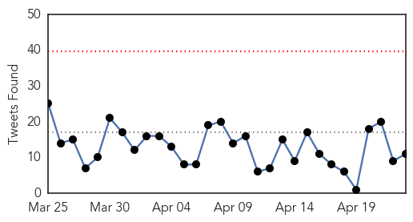
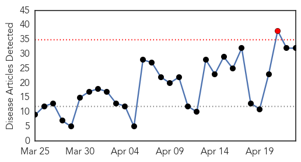

Ebola
30-Day Web Trend
0 alerts, 0 warnings

30-Day Twitter Trend
0 alerts, 0 warnings

Article Locations

Article Confidences

Top Articles:
- 1.000
- Ebola outbreak reaches Senegal, riots break out in Guinea
- 1.000
- Ebola Outbreak Spreads to Conakry, Poses New Challenges
- 1.000
- In Sierra Leone, a chance to learn from Ebola
- 1.000
- "More than 26,000 have contracted the deadly Ebola virus"
- 0.999
- Experimental drug saves monkeys infected with Ebola virus
- 0.999
- Kiwi healthcare worker tested for Ebola
- 0.999
- Sierra Leone hunts Ebola quarantine escapees
- 0.998
- Ebola test drug saved monkey lives: trial results – BorneoPost Online
- 0.998
- New Zealand health worker being tested for Ebola after returning from Africa
- 0.998
- Ebola Death Toll In Guinea Rises To 78
- 0.998
- Ebola drug cures infected monkeys
- 0.997
- Reports detail experimental Ebola treatment, virus evolution
- 0.996
- Engineers create advanced Ebola suit to better protect those in the field
- 0.996
- Healthcare worker tested for Ebola in New Zealand
- 0.996
- Sierra Leone President Bemoans Ebolas Impact
- 0.995
- Scientists to share genetic data on Mers and Ebola
- 0.995
- Vaccine Cures Monkeys Of Deadly Ebola Virus
- 0.995
- Hunt on for seven
- 0.994
- Ebola tests for NZ healthcare worker
- 0.992
- Ebola Drug Cures Infected Monkeys
- 0.991
- Recall Issued for Ebola Virus One-Step Test Kits
- 0.990
- Ebola: World Bank Group Provides New Financing to Help Guinea, Liberia and Sierra Leone Recover from Ebola Emergency
- 0.990
- WHO Regional Director for Africa, Dr. Matshidiso Moeti, Meets with President Sirleaf;Promises Support to Rebuilding a Resilient Healthcare System in Liberia
- 0.990
- Mathematical assessment of the effect of traditional beliefs and customs on the transmission dynamics of the 2014 Ebola outbreaks
- 0.989
- Liberia's Ebola Fight A Model for the Sub-Region Says WHO Regional Director
- 0.989
- Response to ACT Ebola scare very effective despite delay, chief doctor says
- 0.989
- WHO Africa Regional Director Praises Liberia’s Response to Ebola Fight
- 0.985
- West and Central Africa Region Weekly Humanitarian snapshot 14 - 20 April 2015 - Cameroon
- 0.980
- Drug Cures Monkeys Infected With Ebola
- 0.980
- Ghana To Establish An Infectious Disease Center
- 0.974
- Returned healthcare worker being tested to rule out Ebola
- 0.973
- Returned healthcare worker being tested to rule out Ebola
- 0.973
- Guinea reopens border with Liberia
- 0.964
- AU commends financial support worth 950 mln USD in fight against Ebola - Xinhua
- 0.963
- Ebola: experimental drug cures monkeys infected with the virus
- 0.963
- One Day Killer Disease In Nigeria Linked To Poisoning
- 0.950
- Another NZ health worker in isolation, being tested for Ebola
- 0.942
- Ebola midwife: ‘The hardest but best thing I’ve done’
- 0.942
- Ebola scare puts nurse in isolation
- 0.938
- Malaria vaccine a breakthrough despite being partially effective, say scientists
- 0.902
- Update: Ebola and Boston University Global Programs
- 0.898
- Ode-Irele strange deaths: Between tradition and orthodox medicine
- 0.885
- 59th MDW Airman returns from deployment to Liberia
- 0.874
- Saudi Arabia Assures Sierra Leone in Post Ebola Recovery Plan
- 0.867
- Ebola survivors narrate ordeal
- 0.851
- Researchers inform development of Ebola vaccine trials
- 0.833
- Ebola survivors face long-term adverse health effects: Study
- 0.777
- Ebola: experimental vaccine trial an 'unqualified success'
- 0.771
- What Did the U.S. Learn From Ebola? How to Prepare for Bioterrorist Attacks
- 0.754
- Africa
Showing top 50 articles...
Top Tweets:
- 0.943
- Today's Ebola executive summary looks at TKM-Ebola-Guinea, which has recently cured Ebola in monkeys http://t.co/5rrABsYYcU
- 0.937
- Calhoun clinic screening possible Ebola patient - The Daily Citizen http://t.co/SuYjblrFju ebola EVD
- 0.914
- Infographie: Gagner la lutte contre le virus Ebola http://t.co/VnOE005Qvn
- 0.893
- Troops get malaria during Ebola deployment - Military Times http://t.co/ZqspK6sT53 ebola EVD
- 0.874
- Ebola Drug Works Against West African Strain in Study of Monkeys - New York Times http://t.co/xFS9NQ267s ebola EVD
- 0.808
- 23 April - News pouch avianflu avianinfluenza Ebola EbolaResponse MERS http://t.co/ZwjxqCykEl
- 0.798
- In the week to April 19 Guinea reported 21 cases and Sierra Leone 12, compared with 28 and 9 the previous week. @WHO Ebola sit rep
- 0.791
- John Moore's Ebola photographs in Liberia win prestigious prize - The Guardian http://t.co/vF82FGiieP ebola EVD
- 0.780
- Liberia continues to have no new Ebola cases, bringing it to 34 days without a case. EbolaResponse http://t.co/EvJk3WWNxP
- 0.769
- .@UNICEF & EbolaResponse partners have given psychosocial support to 73,111 children affected by the Ebola outbreak http://t.co/gh87d6PZe1
- 0.717
- Ebola in Liberia: “I won't take breaks until it is gone” - UNICEF Connect (blog) http://t.co/YKLvN33YSh ebola EVD
- 0.696
- 127 CDC staff deployed to 16 unaffected countries to build capacity to rapidly detect & contain Ebola, prevent int’l spread. CDCEIS15
- 0.673
- RT: Understanding Ebola in West Africa Through's Lens on Kikwit http://t.co/bUU78n5VVK
- 0.661
- Coloringbook. Helping people in WestAfrica Ebola http://t.co/CztqepjixS
- 0.658
- New Zealand health worker being tested for Ebola after returning from Africa - http://t.co/zuK5zVeXNM http://t.co/XeFOkzhUrW ebola EVD
- 0.658
- New Zealand health worker being tested for Ebola after returning from Africa - http://t.co/zuK5zVeXNM http://t.co/Vtj6R10zUa ebola EVD
- 0.652
- SierraLeone hunts Ebola quarantine escapees http://t.co/zGiFTpvxV7 via
- 0.575
- Malaria co-infection in Ebola patients associated w/ increased case fatality rate underscores the need for malaria control CDCEIS15
- 0.540
- Pulitzer-winning Australian photographer wants the world to remember Ebola - The Guardian http://t.co/AwvDk1wMzl ebola EVD
- 0.538
- Those fighting Ebola say efforts must let up even though the number of cases approaches zero: http://t.co/uMdFrWQ4ME AfricaAgainstEbola
- 0.532
- RT: Ebola drug cures infected monkeys http://t.co/VpKYc1FfN6
- 0.531
- Listeria, measles, Ebola, and other public health reports will be covered at CDCEIS15 today in late-breakers. http://t.co/EmZKlDUnck
- 0.505
- Guinea Reopens Border With Liberia ebola http://t.co/FAaE6xOJMC via
Influenza
30-Day Web Trend
1 alerts, 0 warnings

30-Day Twitter Trend
1 alerts, 0 warnings

Article Locations
Article Confidences

Top Articles:
- 0.999
- Medicines start pouring in after Supreme Court order
- 0.998
- Millions of birds being culled in US, Africa and India as different strains infect poultry
- 0.990
- Another NEW JERSEY resident attacked by a COYOTE ~ LYME DISEASE a risk in all PENNSYLVANIA counties ~ Death in COLORADO confirmed as HANTAVIRUS ~ POWASSAN VIRUS alerts in MASSACHUSETTS and PENNSYLVANI
- 0.988
- 4 people most vulnerable to flu complications and why they should vaccinate
- 0.978
- Queensland doctors issue vaccination reminder for children ahead of flu season
- 0.975
- Bird flu takes toll on Central Minnesota turkey farmers
- 0.970
- Delayed flu vaccine hits Murraylands GPs, chemists
- 0.964
- Warm weather, vaccines may be best bet against bird flu
- 0.947
- Minnesota declares state of emergency over bird flu in poultry
- 0.944
- Poultry in Midwest infected with bird flu
- 0.939
- Colorado: Phillips County man died of hantavirus, not flu
- 0.938
- USDA hopes weather will help as H5N2 outbreaks mount
- 0.937
- Alabama poultry producers track avian flu outbreak
- 0.911
- USDA Working On Bird Flu Vaccine Despite Low Risk To Humans
- 0.892
- Canine flu arrives in Ohio
- 0.890
- Factory farms are hotbeds for viruses
- 0.873
- The Archivist Files: How LA handled the 1918 flu pandemic
- 0.871
- Daily Jefferson County Union: News
- 0.867
- With bird flu spreading, USDA starts on potential vaccine
- 0.820
- Why you should get a yearly flu jab
- 0.799
- Michigan ready to respond if bird flu outbreak hits here
- 0.798
- BIRD FLU: State of emergency declared in Minnesota - Story
- 0.770
- Another flock quarantined: Six cases of bird flu in Wisconsin, more than 1 million chickens affected
- 0.751
- April 22, 2015 Archives
- 0.751
- April 22, 2015 Archives
- 0.683
- Bird Flu ‘Catastrophe’ Mounts Amid Concern Virus Is Airborne
- 0.673
- Bird flu shows no signs of abating
- 0.673
- Deadly bird flu continues march across state
- 0.653
- 6th Case of Bird Flu Detected in Wisconsin
- 0.645
- Bird flu 'catastrophe' mounts in US amid concern virus is airborne
- 0.545
- Canine flu hitting dog-related businesses
- 0.502
- the edge of knowledge
Top Tweets:
- 0.726
- RT: Who is eligible for free flu vaccine? - Medical Observer http://t.co/ssoekIs0ei influenza VaccinesWork VaccinateYourKi…